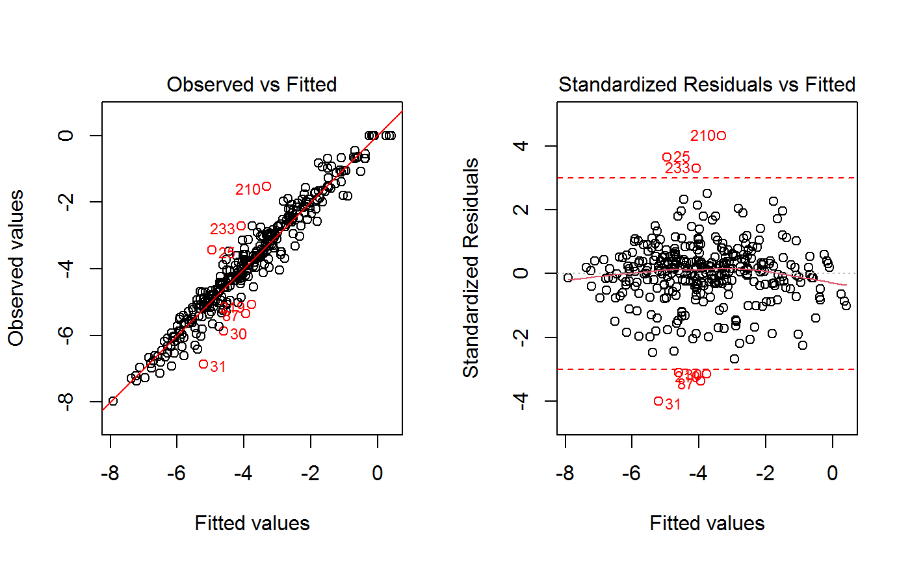
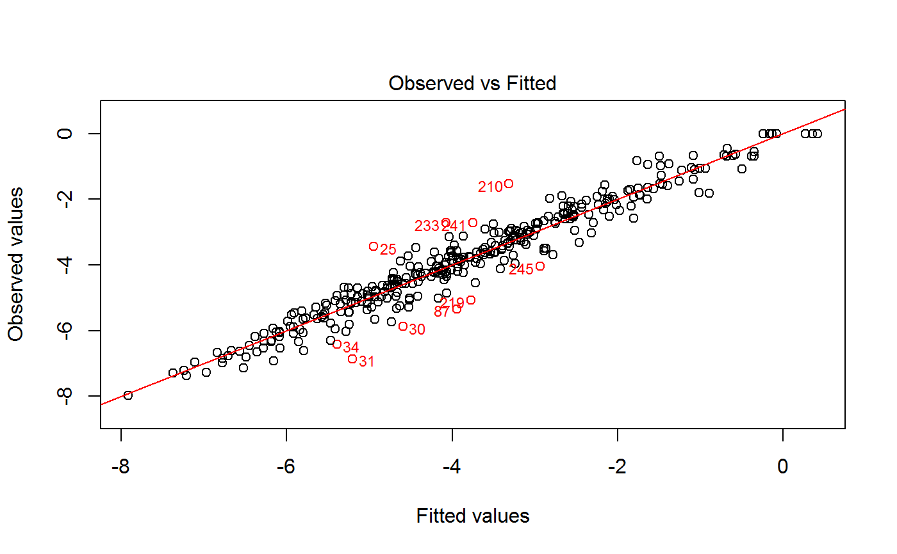
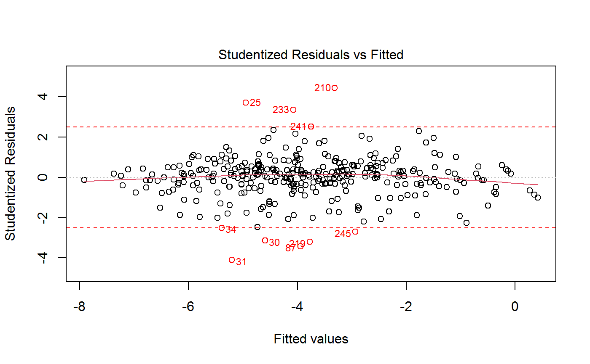
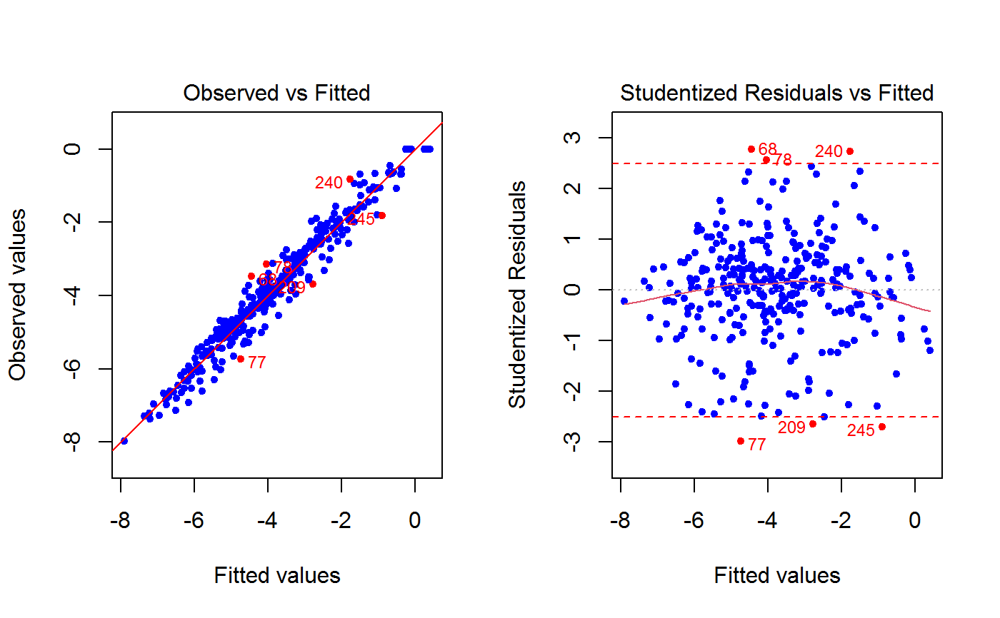
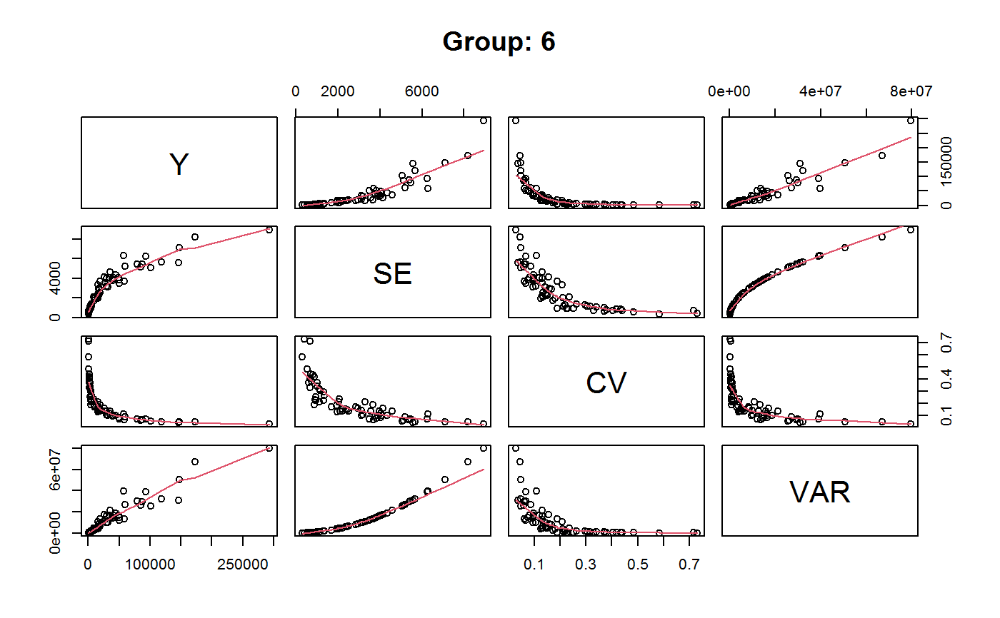
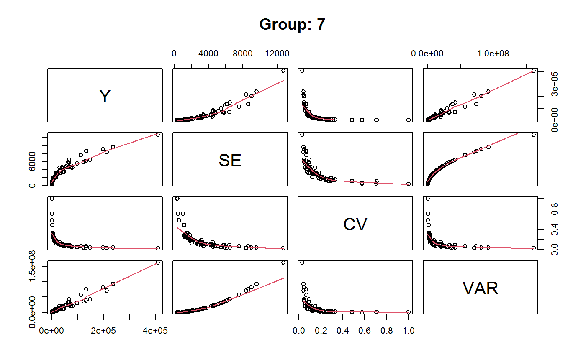
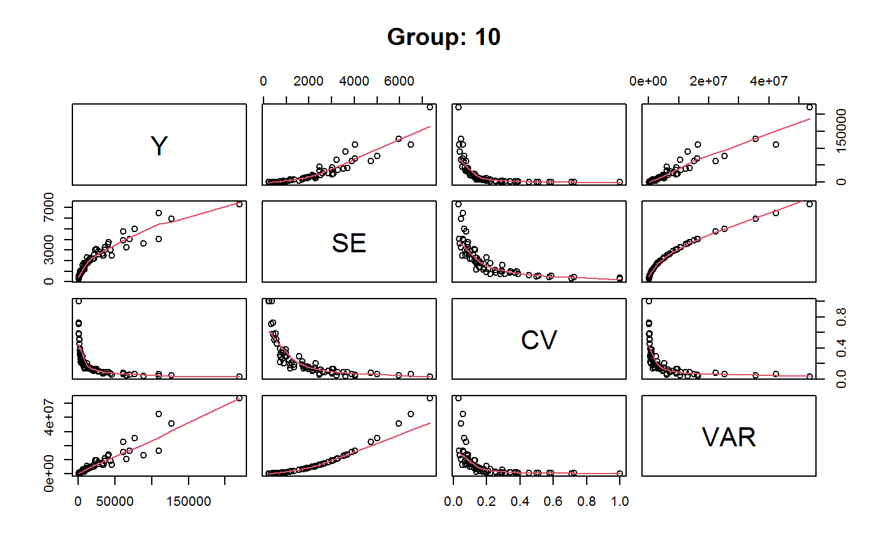
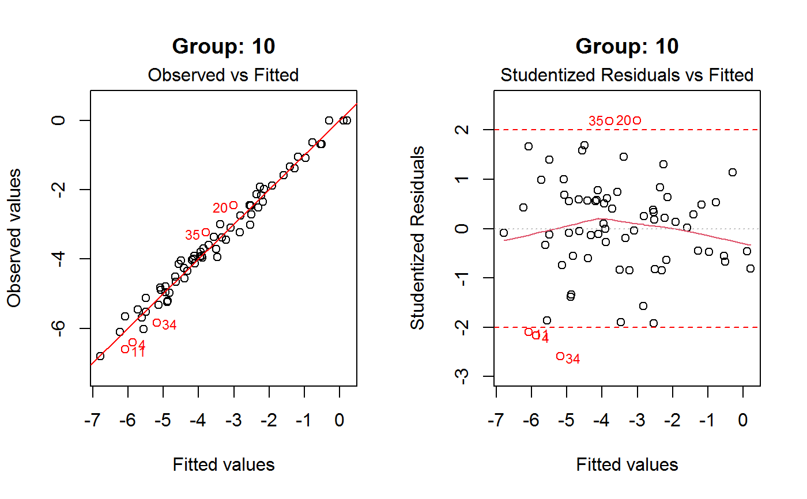

drop.gvf.points.RdThis function drops observations (alleged outliers) from a fitted GVF model and simultaneously re-fits the model.
drop.gvf.points(x, method = c("pick", "cut"), which.plot = 1:2, res.type = c("standard", "student"), res.cut = 3, id.n = 3, labels.id = NULL, cex.id = 0.75, label.pos = c(4, 2), cex.caption = 1, col = NULL, drop.col = "red", ...)
| x | An object containing a single fitted GVF model (i.e. of class |
|---|---|
| method |
|
| which.plot |
|
| res.type |
|
| res.cut | A positive value: observations to be dropped will be those with residuals whose absolute
value exceeds |
| id.n | Number of points to be initially labelled in each plot, starting with the most extreme.
Only meaningful if |
| labels.id | Vector of labels, from which the labels for extreme points will be chosen. |
| cex.id | Magnification of point labels. |
| label.pos | Positioning of labels, for the left half and right half of the graph(s) respectively. |
| cex.caption | Controls the size of |
| col | Color to be used for the points in the plot(s). |
| drop.col | Color to be used to visualize and annotate the points to be dropped in the plot(s). |
| ... | Other parameters to be passed through to plotting functions. |
This function drops observations (alleged outliers) from a single fitted GVF model and simultaneously re-fits the model.
As a side effect, the function prints on screen the induced change for selected quality measures (see, e.g.,
getR2).
If method = "pick", observations to be dropped are identified interactively by clicking on points of a plot (see ‘Note’).
Argument which.plot determines the nature of the plot: value 1 is for ‘Observed vs Fitted’,
value 2 is for ‘Residuals vs Fitted’. In the latter case, argument res.type specifies what
kind of residuals have to be plotted. Argument id.n specifies how many points have to be labelled
initially, starting with the most extreme in terms of the selected residuals: this applies to both kinds of plots.
If method = "cut", observations to be dropped are those with residuals whose absolute value exceeds the
value of argument res.cut. Again, argument res.type specifies what kind of residuals have to be used
(and plotted). The points which have been cut will be highlighted on a plot, whose nature is again specified by
argument which.plot. If which.plot = 1:2, dropped points will be visualized on both the
‘Observed vs Fitted’ and the ‘Residuals vs Fitted’ graphs simultaneously.
Argument drop.col controls the color to be used to visualize and annotate in the plot(s) the points to be
dropped. All the other arguments have the same meaning as in function plot.lm.
An object of the same class as x (i.e. either gvf.fit or gvf.fit.gr), containing the original GVF model re-fitted after dropping (alleged) outliers.
For method = "pick", function drop.gvf.points is only supported on those screen devices for which
function identify is supported. The identification process can be terminated either by right-clicking the mouse
and selecting 'Stop' from the menu, or from the 'Stop' menu on the graphics window.
GVF.db to manage ReGenesees archive of registered GVF models, gvf.input and svystat to prepare the input for GVF model fitting, fit.gvf to fit GVF models, plot.gvf.fit to get diagnostic plots for fitted GVF models, and predictCV to predict CV values via fitted GVF models.
#> Classes ‘gvf.input’ and 'data.frame': 349 obs. of 5 variables: #> $ name: Factor w/ 349 levels "age10c1","age10c10",..: 331 348 349 332 333 334 11 12 13 14 ... #> $ Y : num 924101 470061 454041 536680 312655 ... #> $ SE : num 17173 12796 11360 13970 11181 ... #> $ CV : num 0.0186 0.0272 0.025 0.026 0.0358 ... #> $ VAR : num 2.95e+08 1.64e+08 1.29e+08 1.95e+08 1.25e+08 ... #> - attr(*, "y.vars")= chr [1:7] "ind" "sex" "marstat" "age5c" ... #> - attr(*, "stats.kind")= chr "Absolute Frequency" #> - attr(*, "has.Deff")= logi FALSE #> - attr(*, "design")= symbol exdes# List available registered GVF models: GVF.db#> #> # Registered GVF models currently available: #> #> Model.id GVF.model Estimator.kind Resp.to.CV #> 1 1 log(CV^2) ~ log(Y) Frequency sqrt(exp(resp)) #> 2 2 CV^2 ~ I(1/Y) Frequency sqrt(resp) #> 3 3 CV^2 ~ I(1/Y) + I(1/Y^2) Frequency sqrt(resp) #> 4 4 SE ~ Y + I(Y^2) Total resp/Y #> 5 5 CV ~ I(1/Y) + Y Total resp #>#> ---------------------------------------- #> GVF model: log(CV^2) ~ log(Y) #> - model.id: 1 #> - weights: NULL #> #> Coefficients: #> (Intercept) log(Y) #> 5.7518 -0.9949 #> #>summary(m)#> ------------------------------------------------ #> GVF model: log(CV^2) ~ log(Y) #> - model.id: 1 #> - weights: NULL #> #> Residuals: #> Min 1Q Median 3Q Max #> -1.65000 -0.16023 0.03584 0.20039 1.78578 #> #> Coefficients: #> Estimate Std. Error t value Pr(>|t|) #> (Intercept) 5.75185 0.12862 44.72 <2e-16 *** #> log(Y) -0.99490 0.01325 -75.10 <2e-16 *** #> --- #> Signif. codes: 0 ‘***’ 0.001 ‘**’ 0.01 ‘*’ 0.05 ‘.’ 0.1 ‘ ’ 1 #> #> Residual standard error: 0.4134 on 341 degrees of freedom #> (6 observations deleted due to missingness) #> Multiple R-squared: 0.943, Adjusted R-squared: 0.9428 #> F-statistic: 5640 on 1 and 341 DF, p-value: < 2.2e-16 #> #>############################################################## # Method 'pick': identify outlier observations to be dropped # # interactively by clicking on points of a plot. # ############################################################## # Using the 'Observed vs Fitted' plot (the default): if (FALSE) { m1 <- drop.gvf.points(m) m1 summary(m1) } # Using the 'Residuals vs Fitted' plot with standardized # residuals (the default) and increasing id.n to get more # labelled points to guide your choices: if (FALSE) { m1 <- drop.gvf.points(m, which.plot = 2, id.n = 10) m1 summary(m1) } # The same as above, but with studentized residuals and # playing with colors: if (FALSE) { m1 <- drop.gvf.points(m, which.plot = 2, id.n = 10, res.type = "student", col = "blue", drop.col = "green", pch = 20) m1 summary(m1) } ############################################################# # Method 'cut': identify outlier observations to be dropped # # by specifying a threshold for the absolute values of the # # residuals. # ############################################################# # Using default threshold on standardized residuals and visualizing # dropped observations on both 'Observed vs Fitted' and 'Residuals # vs Fitted' plots: m1 <- drop.gvf.points(m, method ="cut")#> #> # GVF model has been re-fitted after having dropped 7 observations #> # #> # - R^2 passed from 0.9429861 to 0.9569145 #> # - Adjusted R^2 passed from 0.9428189 to 0.9567855 #> # - AIC passed from 371.4342 to 268.6404 #> # - BIC passed from 382.9473 to 280.0918 #>m1#> ---------------------------------------- #> GVF model: log(CV^2) ~ log(Y) #> - model.id: 1 #> - weights: NULL #> #> Coefficients: #> (Intercept) log(Y) #> 5.7317 -0.9925 #> #>summary(m1)#> ------------------------------------------------ #> GVF model: log(CV^2) ~ log(Y) #> - model.id: 1 #> - weights: NULL #> #> Residuals: #> Min 1Q Median 3Q Max #> -1.1071 -0.1558 0.0309 0.1911 1.0311 #> #> Coefficients: #> Estimate Std. Error t value Pr(>|t|) #> (Intercept) 5.73173 0.11179 51.27 <2e-16 *** #> log(Y) -0.99249 0.01152 -86.13 <2e-16 *** #> --- #> Signif. codes: 0 ‘***’ 0.001 ‘**’ 0.01 ‘*’ 0.05 ‘.’ 0.1 ‘ ’ 1 #> #> Residual standard error: 0.3588 on 334 degrees of freedom #> (6 observations deleted due to missingness) #> Multiple R-squared: 0.9569, Adjusted R-squared: 0.9568 #> F-statistic: 7418 on 1 and 334 DF, p-value: < 2.2e-16 #> #># Using a custom threshold on studentized residuals and visualizing # dropped observations on the 'Observed vs Fitted' plot: m1 <- drop.gvf.points(m, method ="cut", res.type = "student", res.cut = 2.5, which.plot = 1)#> #> # GVF model has been re-fitted after having dropped 10 observations #> # #> # - R^2 passed from 0.9429861 to 0.9599437 #> # - Adjusted R^2 passed from 0.9428189 to 0.9598227 #> # - AIC passed from 371.4342 to 242.2297 #> # - BIC passed from 382.9473 to 253.6541 #>m1#> ---------------------------------------- #> GVF model: log(CV^2) ~ log(Y) #> - model.id: 1 #> - weights: NULL #> #> Coefficients: #> (Intercept) log(Y) #> 5.7271 -0.9917 #> #>summary(m1)#> ------------------------------------------------ #> GVF model: log(CV^2) ~ log(Y) #> - model.id: 1 #> - weights: NULL #> #> Residuals: #> Min 1Q Median 3Q Max #> -1.01642 -0.15686 0.02688 0.18760 0.95215 #> #> Coefficients: #> Estimate Std. Error t value Pr(>|t|) #> (Intercept) 5.72714 0.10800 53.03 <2e-16 *** #> log(Y) -0.99166 0.01113 -89.06 <2e-16 *** #> --- #> Signif. codes: 0 ‘***’ 0.001 ‘**’ 0.01 ‘*’ 0.05 ‘.’ 0.1 ‘ ’ 1 #> #> Residual standard error: 0.346 on 331 degrees of freedom #> (6 observations deleted due to missingness) #> Multiple R-squared: 0.9599, Adjusted R-squared: 0.9598 #> F-statistic: 7932 on 1 and 331 DF, p-value: < 2.2e-16 #> #># The same as above, but visualizing dropped observations on the # 'Residuals vs Fitted' plot: m1 <- drop.gvf.points(m, method ="cut", res.type = "student", res.cut = 2.5, which.plot = 2)#> #> # GVF model has been re-fitted after having dropped 10 observations #> # #> # - R^2 passed from 0.9429861 to 0.9599437 #> # - Adjusted R^2 passed from 0.9428189 to 0.9598227 #> # - AIC passed from 371.4342 to 242.2297 #> # - BIC passed from 382.9473 to 253.6541 #>m1#> ---------------------------------------- #> GVF model: log(CV^2) ~ log(Y) #> - model.id: 1 #> - weights: NULL #> #> Coefficients: #> (Intercept) log(Y) #> 5.7271 -0.9917 #> #>summary(m1)#> ------------------------------------------------ #> GVF model: log(CV^2) ~ log(Y) #> - model.id: 1 #> - weights: NULL #> #> Residuals: #> Min 1Q Median 3Q Max #> -1.01642 -0.15686 0.02688 0.18760 0.95215 #> #> Coefficients: #> Estimate Std. Error t value Pr(>|t|) #> (Intercept) 5.72714 0.10800 53.03 <2e-16 *** #> log(Y) -0.99166 0.01113 -89.06 <2e-16 *** #> --- #> Signif. codes: 0 ‘***’ 0.001 ‘**’ 0.01 ‘*’ 0.05 ‘.’ 0.1 ‘ ’ 1 #> #> Residual standard error: 0.346 on 331 degrees of freedom #> (6 observations deleted due to missingness) #> Multiple R-squared: 0.9599, Adjusted R-squared: 0.9598 #> F-statistic: 7932 on 1 and 331 DF, p-value: < 2.2e-16 #> #># You can obviously "cut"/"pick" alleged outliers again from an already # "cut"/"picked" fitted GVF model: m2 <- drop.gvf.points(m1, method ="cut", res.type = "student", res.cut = 2.5, col = "blue", pch = 20)#> #> # GVF model has been re-fitted after having dropped 6 observations #> # #> # - R^2 passed from 0.9599437 to 0.9646613 #> # - Adjusted R^2 passed from 0.9598227 to 0.9645526 #> # - AIC passed from 242.2297 to 197.3965 #> # - BIC passed from 253.6541 to 208.7663 #>m2#> ---------------------------------------- #> GVF model: log(CV^2) ~ log(Y) #> - model.id: 1 #> - weights: NULL #> #> Coefficients: #> (Intercept) log(Y) #> 5.7432 -0.9933 #> #>summary(m2)#> ------------------------------------------------ #> GVF model: log(CV^2) ~ log(Y) #> - model.id: 1 #> - weights: NULL #> #> Residuals: #> Min 1Q Median 3Q Max #> -0.85661 -0.15338 0.02836 0.18454 0.83706 #> #> Coefficients: #> Estimate Std. Error t value Pr(>|t|) #> (Intercept) 5.74320 0.10242 56.08 <2e-16 *** #> log(Y) -0.99332 0.01055 -94.19 <2e-16 *** #> --- #> Signif. codes: 0 ‘***’ 0.001 ‘**’ 0.01 ‘*’ 0.05 ‘.’ 0.1 ‘ ’ 1 #> #> Residual standard error: 0.3252 on 325 degrees of freedom #> (6 observations deleted due to missingness) #> Multiple R-squared: 0.9647, Adjusted R-squared: 0.9646 #> F-statistic: 8872 on 1 and 325 DF, p-value: < 2.2e-16 #> #>################################################################# # Identifying outlier observations to be dropped from "grouped" # # GVF fitted models (i.e. x has class 'gvf.fit.gr'). # ################################################################# # Recall we have at our disposal the following survey design object # defined on household data: exdes#> Stratified 2 - Stage Cluster Sampling Design (with replacement) #> - [55] strata #> - [1307, 2372] clusters #> #> Call: #> e.svydesign(data = example, ids = ~towcod + famcod, strata = ~SUPERSTRATUM, #> weights = ~weight, fpc = NULL, self.rep.str = NULL, check.data = TRUE)# Now use function svystat to prepare "grouped" estimates and errors # of counts to be fitted separately (here groups are regions): ee <- svystat(exdes, y=~ind, by=~age5c:marstat:sex, combo=3, group=~regcod) ee#> $`6` #> name Y SE CV VAR #> 1 6:ind 293458.3 8923.8062 0.03040911 79634317.18 #> 2 6.1:ind 40903.4 4080.2341 0.09975293 16648310.19 #> 3 6.2:ind 93387.9 6248.6896 0.06691113 39046122.18 #> 4 6.3:ind 118888.1 5682.2007 0.04779453 32287404.53 #> 5 6.4:ind 34964.4 4605.3581 0.13171563 21209322.94 #> 6 6.5:ind 5314.5 1131.0289 0.21281943 1279226.28 #> 7 6.married:ind 173001.9 8183.3890 0.04730231 66967855.65 #> 8 6.unmarried:ind 101776.7 5053.8683 0.04965644 25541584.62 #> 9 6.widowed:ind 18679.7 2963.9010 0.15866962 8784709.00 #> 10 6.f:ind 147487.3 7115.8574 0.04824726 50635427.06 #> 11 6.m:ind 145971.0 5566.5674 0.03813475 30986672.55 #> 12 6.1.married:ind 5967.7 1315.6942 0.22046922 1731051.10 #> 13 6.2.married:ind 57155.1 6302.4072 0.11026850 39720336.22 #> 14 6.3.married:ind 79175.5 5469.7271 0.06908358 29917914.31 #> 15 6.4.married:ind 26504.1 4136.7694 0.15608036 17112860.92 #> 16 6.5.married:ind 4199.5 944.2243 0.22484207 891559.44 #> 17 6.1.unmarried:ind 33965.7 4046.9080 0.11914690 16377464.58 #> 18 6.2.unmarried:ind 32410.4 3122.1231 0.09633090 9747652.60 #> 19 6.3.unmarried:ind 30093.6 3199.6627 0.10632369 10237841.27 #> 20 6.4.unmarried:ind 4728.9 896.3779 0.18955316 803493.41 #> 21 6.5.unmarried:ind 578.1 421.7000 0.72945865 177830.93 #> 22 6.1.widowed:ind 970.0 694.1545 0.71562322 481850.50 #> 23 6.2.widowed:ind 3822.4 1169.1801 0.30587592 1366982.16 #> 24 6.3.widowed:ind 9619.0 2031.4324 0.21118956 4126717.63 #> 25 6.4.widowed:ind 3731.4 945.5378 0.25340028 894041.78 #> 26 6.5.widowed:ind 536.9 313.7392 0.58435315 98432.29 #> 27 6.1.f:ind 22115.0 3131.3939 0.14159593 9805627.87 #> 28 6.2.f:ind 44476.2 4337.1112 0.09751533 18810533.44 #> 29 6.3.f:ind 59710.2 5198.9486 0.08706969 27029066.31 #> 30 6.4.f:ind 19465.0 3663.7726 0.18822361 13423230.00 #> 31 6.5.f:ind 1720.9 695.4733 0.40413348 483683.11 #> 32 6.1.m:ind 18788.4 2531.7660 0.13475155 6409839.01 #> 33 6.2.m:ind 48911.7 4059.2074 0.08299052 16477164.86 #> 34 6.3.m:ind 59177.9 3694.3741 0.06242827 13648400.30 #> 35 6.4.m:ind 15499.4 1970.9812 0.12716500 3884766.99 #> 36 6.5.m:ind 3593.6 1131.3951 0.31483612 1280054.82 #> 37 6.married.f:ind 87840.2 5409.9384 0.06158841 29267433.12 #> 38 6.unmarried.f:ind 50867.3 3495.6179 0.06872033 12219344.36 #> 39 6.widowed.f:ind 8779.8 2070.0963 0.23577943 4285298.53 #> 40 6.married.m:ind 85161.7 5118.0128 0.06009759 26194054.62 #> 41 6.unmarried.m:ind 50909.4 3830.8081 0.07524756 14675091.08 #> 42 6.widowed.m:ind 9899.9 1697.3512 0.17145135 2881001.19 #> 43 6.1.married.f:ind 4077.5 937.6069 0.22994651 879106.71 #> 44 6.2.married.f:ind 27145.1 3565.8442 0.13136235 12715244.51 #> 45 6.3.married.f:ind 39672.3 3781.5369 0.09531933 14300021.10 #> 46 6.4.married.f:ind 15802.5 3308.0005 0.20933400 10942867.16 #> 47 6.5.married.f:ind 1142.8 553.0390 0.48393336 305852.18 #> 48 6.1.unmarried.f:ind 17067.5 2873.2550 0.16834657 8255594.41 #> 49 6.2.unmarried.f:ind 15640.3 2373.0681 0.15172779 5631452.23 #> 50 6.3.unmarried.f:ind 15591.7 2101.6684 0.13479405 4417009.96 #> 51 6.4.unmarried.f:ind 1989.7 755.2217 0.37956562 570359.83 #> 52 6.5.unmarried.f:ind 578.1 421.7000 0.72945865 177830.93 #> 53 6.1.widowed.f:ind 970.0 694.1545 0.71562322 481850.50 #> 54 6.2.widowed.f:ind 1690.8 626.5500 0.37056423 392564.90 #> 55 6.3.widowed.f:ind 4446.2 1318.1870 0.29647497 1737616.96 #> 56 6.4.widowed.f:ind 1672.8 734.4694 0.43906588 539445.31 #> 57 6.1.married.m:ind 1890.2 823.5977 0.43571988 678313.21 #> 58 6.2.married.m:ind 30010.0 3966.9579 0.13218787 15736754.74 #> 59 6.3.married.m:ind 39503.2 3919.4184 0.09921775 15361840.81 #> 60 6.4.married.m:ind 10701.6 1943.2926 0.18158898 3776386.31 #> 61 6.5.married.m:ind 3056.7 1038.0655 0.33960332 1077579.93 #> 62 6.1.unmarried.m:ind 16898.2 2450.0347 0.14498791 6002670.02 #> 63 6.2.unmarried.m:ind 16770.1 2213.2098 0.13197356 4898297.47 #> 64 6.3.unmarried.m:ind 14501.9 2202.0284 0.15184413 4848928.86 #> 65 6.4.unmarried.m:ind 2739.2 1015.0497 0.37056430 1030325.98 #> 66 6.2.widowed.m:ind 2131.6 890.0968 0.41757215 792272.32 #> 67 6.3.widowed.m:ind 5172.8 1359.7397 0.26286338 1848892.02 #> 68 6.4.widowed.m:ind 2058.6 681.9549 0.33127121 465062.51 #> 69 6.5.widowed.m:ind 536.9 313.7392 0.58435315 98432.29 #> #> $`7` #> name Y SE CV VAR #> 1 7:ind 410671.9 12714.3656 0.03095991 161655092.4 #> 2 7.1:ind 55833.8 4814.4454 0.08622815 23178884.8 #> 3 7.2:ind 131681.4 6148.9017 0.04669529 37808991.8 #> 4 7.3:ind 148350.1 6489.9526 0.04374754 42119485.0 #> 5 7.4:ind 63302.5 5796.0716 0.09156150 33594446.5 #> 6 7.5:ind 11504.1 2216.1578 0.19264069 4911355.5 #> 7 7.married:ind 236734.3 9621.8082 0.04064391 92579192.2 #> 8 7.unmarried:ind 133872.4 8619.0820 0.06438281 74288573.8 #> 9 7.widowed:ind 40065.2 4548.7671 0.11353412 20691282.2 #> 10 7.f:ind 212537.3 8415.1664 0.03959383 70815025.2 #> 11 7.m:ind 198134.6 9038.6166 0.04561857 81696590.9 #> 12 7.1.married:ind 8804.0 1744.4891 0.19814733 3043242.1 #> 13 7.2.married:ind 79792.2 4518.5143 0.05662852 20416971.7 #> 14 7.3.married:ind 98530.9 5471.1125 0.05552687 29933072.3 #> 15 7.4.married:ind 40925.0 4314.5611 0.10542605 18615437.6 #> 16 7.5.married:ind 8682.2 1867.8087 0.21513081 3488709.5 #> 17 7.1.unmarried:ind 46036.5 4315.9282 0.09375014 18627235.8 #> 18 7.2.unmarried:ind 41122.7 4302.3608 0.10462253 18510308.3 #> 19 7.3.unmarried:ind 34531.2 3825.3103 0.11077838 14632998.7 #> 20 7.4.unmarried:ind 11768.2 2252.2093 0.19138095 5072446.6 #> 21 7.5.unmarried:ind 413.8 413.8000 1.00000000 171230.4 #> 22 7.1.widowed:ind 993.3 573.5355 0.57740412 328943.0 #> 23 7.2.widowed:ind 10766.5 1916.2722 0.17798469 3672099.1 #> 24 7.3.widowed:ind 15288.0 2594.8146 0.16972884 6733062.6 #> 25 7.4.widowed:ind 10609.3 2137.7459 0.20149736 4569957.5 #> 26 7.5.widowed:ind 2408.1 1167.4542 0.48480305 1362949.4 #> 27 7.1.f:ind 31771.0 3604.7491 0.11346036 12994216.1 #> 28 7.2.f:ind 66546.2 4784.6957 0.07190036 22893312.7 #> 29 7.3.f:ind 74654.8 4559.7727 0.06107809 20791527.3 #> 30 7.4.f:ind 33306.9 3255.5326 0.09774349 10598492.8 #> 31 7.5.f:ind 6258.4 1834.2559 0.29308703 3364494.6 #> 32 7.1.m:ind 24062.8 3107.2618 0.12913135 9655075.9 #> 33 7.2.m:ind 65135.2 4724.2217 0.07252947 22318270.9 #> 34 7.3.m:ind 73695.3 5181.3387 0.07030759 26846270.4 #> 35 7.4.m:ind 29995.6 4500.1987 0.15002863 20251788.8 #> 36 7.5.m:ind 5245.7 1294.9037 0.24685051 1676775.6 #> 37 7.married.f:ind 124346.9 5930.1481 0.04769036 35166656.4 #> 38 7.unmarried.f:ind 67003.8 6437.4368 0.09607570 41440592.8 #> 39 7.widowed.f:ind 21186.6 3148.4862 0.14860743 9912965.3 #> 40 7.married.m:ind 112387.4 7571.3439 0.06736826 57325248.0 #> 41 7.unmarried.m:ind 66868.6 5722.6399 0.08558038 32748607.2 #> 42 7.widowed.m:ind 18878.6 2912.3930 0.15426955 8482033.3 #> 43 7.1.married.f:ind 4636.9 1357.5857 0.29277873 1843039.0 #> 44 7.2.married.f:ind 44528.6 3436.9318 0.07718482 11812500.0 #> 45 7.3.married.f:ind 48107.9 3420.2548 0.07109549 11698143.1 #> 46 7.4.married.f:ind 22683.2 2748.9548 0.12118902 7556752.3 #> 47 7.5.married.f:ind 4390.3 1460.5179 0.33266928 2133112.7 #> 48 7.1.unmarried.f:ind 26491.5 3182.7581 0.12014261 10129948.8 #> 49 7.2.unmarried.f:ind 17819.6 2765.3126 0.15518376 7646953.7 #> 50 7.3.unmarried.f:ind 17587.6 3213.1836 0.18269597 10324548.6 #> 51 7.4.unmarried.f:ind 4691.3 1402.5801 0.29897471 1967230.9 #> 52 7.5.unmarried.f:ind 413.8 413.8000 1.00000000 171230.4 #> 53 7.1.widowed.f:ind 642.6 453.8199 0.70622455 205952.5 #> 54 7.2.widowed.f:ind 4198.0 1318.9821 0.31419298 1739713.9 #> 55 7.3.widowed.f:ind 8959.3 2027.3541 0.22628488 4110164.7 #> 56 7.4.widowed.f:ind 5932.4 1569.2589 0.26452345 2462573.5 #> 57 7.5.widowed.f:ind 1454.3 1029.6366 0.70799461 1060151.4 #> 58 7.1.married.m:ind 4167.1 1209.0035 0.29013066 1461689.4 #> 59 7.2.married.m:ind 35263.6 3134.0830 0.08887587 9822476.1 #> 60 7.3.married.m:ind 50423.0 4597.0546 0.09116980 21132911.4 #> 61 7.4.married.m:ind 18241.8 3054.2491 0.16743135 9328437.6 #> 62 7.5.married.m:ind 4291.9 1174.8005 0.27372504 1380156.3 #> 63 7.1.unmarried.m:ind 19545.0 2762.2144 0.14132588 7629828.2 #> 64 7.2.unmarried.m:ind 23303.1 3312.8013 0.14216140 10974652.3 #> 65 7.3.unmarried.m:ind 16943.6 2078.2889 0.12265923 4319284.7 #> 66 7.4.unmarried.m:ind 7076.9 1573.9141 0.22240163 2477205.5 #> 67 7.1.widowed.m:ind 350.7 350.7000 1.00000000 122990.5 #> 68 7.2.widowed.m:ind 6568.5 1668.0436 0.25394589 2782369.4 #> 69 7.3.widowed.m:ind 6328.7 1610.9163 0.25454141 2595051.2 #> 70 7.4.widowed.m:ind 4676.9 1557.4125 0.33300102 2425533.6 #> 71 7.5.widowed.m:ind 953.8 550.2708 0.57692471 302797.9 #> #> $`10` #> name Y SE CV VAR #> 1 10:ind 219971.1 7321.9925 0.03328616 53611573.64 #> 2 10.1:ind 32191.2 2677.7042 0.08318125 7170099.98 #> 3 10.2:ind 69505.8 4025.6113 0.05791763 16205546.64 #> 4 10.3:ind 89225.7 3619.7569 0.04056855 13102640.30 #> 5 10.4:ind 24630.7 3092.2990 0.12554653 9562313.35 #> 6 10.5:ind 4417.7 1119.3094 0.25336928 1252853.64 #> 7 10.married:ind 126944.0 5968.8444 0.04701951 35627103.95 #> 8 10.unmarried:ind 77005.4 5018.0796 0.06516530 25181123.19 #> 9 10.widowed:ind 16021.7 2259.4330 0.14102330 5105037.66 #> 10 10.f:ind 110036.2 6503.6175 0.05910434 42297040.14 #> 11 10.m:ind 109934.9 4044.3589 0.03678867 16356838.91 #> 12 10.1.married:ind 4513.9 894.3470 0.19813177 799856.54 #> 13 10.2.married:ind 40674.5 3530.8468 0.08680738 12466879.07 #> 14 10.3.married:ind 61439.6 3890.1505 0.06331666 15133271.03 #> 15 10.4.married:ind 16956.8 2256.5625 0.13307715 5092074.52 #> 16 10.5.married:ind 3359.2 988.7783 0.29434935 977682.61 #> 17 10.1.unmarried:ind 26954.1 2617.4122 0.09710627 6850846.51 #> 18 10.2.unmarried:ind 23022.1 3033.8191 0.13177856 9204058.37 #> 19 10.3.unmarried:ind 21186.4 2166.0879 0.10223955 4691936.96 #> 20 10.4.unmarried:ind 5381.3 1578.6478 0.29335807 2492128.87 #> 21 10.5.unmarried:ind 461.5 327.1987 0.70898954 107058.97 #> 22 10.1.widowed:ind 723.2 418.5259 0.57871393 175163.94 #> 23 10.2.widowed:ind 5809.2 1234.0241 0.21242583 1522815.56 #> 24 10.3.widowed:ind 6599.7 1181.1396 0.17896868 1395090.76 #> 25 10.4.widowed:ind 2292.6 852.8892 0.37201833 727420.01 #> 26 10.5.widowed:ind 597.0 434.0183 0.72699882 188371.88 #> 27 10.1.f:ind 16508.0 2236.1673 0.13545961 5000444.07 #> 28 10.2.f:ind 35982.0 3268.5544 0.09083860 10683447.59 #> 29 10.3.f:ind 43415.1 3024.8402 0.06967254 9149658.39 #> 30 10.4.f:ind 13010.9 1841.6391 0.14154587 3391634.69 #> 31 10.5.f:ind 1120.2 572.8502 0.51138207 328157.34 #> 32 10.1.m:ind 15683.2 1991.9172 0.12700961 3967733.99 #> 33 10.2.m:ind 33523.8 2470.0948 0.07368183 6101368.34 #> 34 10.3.m:ind 45810.6 2478.0174 0.05409266 6140570.39 #> 35 10.4.m:ind 11619.8 2301.9531 0.19810609 5298988.30 #> 36 10.5.m:ind 3297.5 961.6113 0.29161829 924696.30 #> 37 10.married.f:ind 61382.5 4730.9097 0.07707261 22381506.32 #> 38 10.unmarried.f:ind 41270.0 3704.7516 0.08976864 13725184.17 #> 39 10.widowed.f:ind 7383.7 1359.0597 0.18406215 1847043.27 #> 40 10.married.m:ind 65561.5 3221.6794 0.04913981 10379217.91 #> 41 10.unmarried.m:ind 35735.4 2994.3930 0.08379346 8966389.34 #> 42 10.widowed.m:ind 8638.0 1351.2763 0.15643394 1825947.75 #> 43 10.1.married.f:ind 2672.6 757.6423 0.28348512 574021.92 #> 44 10.2.married.f:ind 21293.6 2531.1412 0.11886864 6406675.95 #> 45 10.3.married.f:ind 27295.2 2865.8517 0.10499471 8213106.04 #> 46 10.4.married.f:ind 9228.1 1716.0832 0.18596278 2944941.41 #> 47 10.5.married.f:ind 893.0 525.8683 0.58887831 276537.50 #> 48 10.1.unmarried.f:ind 13359.8 1994.9978 0.14932842 3980016.38 #> 49 10.2.unmarried.f:ind 12320.2 1945.9428 0.15794734 3786693.55 #> 50 10.3.unmarried.f:ind 12777.2 1762.1482 0.13791349 3105166.32 #> 51 10.4.unmarried.f:ind 2812.8 968.4658 0.34430669 937926.09 #> 52 10.1.widowed.f:ind 475.6 337.4288 0.70948019 113858.18 #> 53 10.2.widowed.f:ind 2368.2 734.2456 0.31004374 539116.59 #> 54 10.3.widowed.f:ind 3342.7 738.6556 0.22097574 545612.10 #> 55 10.4.widowed.f:ind 970.0 484.9514 0.49994993 235177.89 #> 56 10.5.widowed.f:ind 227.2 227.2000 1.00000000 51619.84 #> 57 10.1.married.m:ind 1841.3 717.3732 0.38960149 514624.35 #> 58 10.2.married.m:ind 19380.9 2201.5097 0.11359171 4846644.77 #> 59 10.3.married.m:ind 34144.4 2475.9041 0.07251274 6130101.02 #> 60 10.4.married.m:ind 7728.7 1723.0100 0.22293659 2968763.43 #> 61 10.5.married.m:ind 2466.2 837.3441 0.33952805 701145.11 #> 62 10.1.unmarried.m:ind 13594.3 1906.8274 0.14026668 3635990.71 #> 63 10.2.unmarried.m:ind 10701.9 1764.2318 0.16485220 3112513.72 #> 64 10.3.unmarried.m:ind 8409.2 1165.7427 0.13862706 1358956.06 #> 65 10.4.unmarried.m:ind 2568.5 982.4032 0.38248128 965116.00 #> 66 10.5.unmarried.m:ind 461.5 327.1987 0.70898954 107058.97 #> 67 10.1.widowed.m:ind 247.6 247.6000 1.00000000 61305.76 #> 68 10.2.widowed.m:ind 3441.0 1007.7442 0.29286376 1015548.38 #> 69 10.3.widowed.m:ind 3257.0 837.9413 0.25727398 702145.70 #> 70 10.4.widowed.m:ind 1322.6 599.8629 0.45354826 359835.54 #> 71 10.5.widowed.m:ind 369.8 369.8000 1.00000000 136752.04 #> #> attr(,"group.vars") #> [1] "regcod" #> attr(,"class") #> [1] "gvf.input.gr" "list"plot(ee)#> $`6` #> ---------------------------------------- #> GVF model: log(CV^2) ~ log(Y) #> - model.id: 1 #> - weights: NULL #> #> Coefficients: #> (Intercept) log(Y) #> 5.3879 -0.9528 #> #> #> #> $`7` #> ---------------------------------------- #> GVF model: log(CV^2) ~ log(Y) #> - model.id: 1 #> - weights: NULL #> #> Coefficients: #> (Intercept) log(Y) #> 6.153 -1.017 #> #> #> #> $`10` #> ---------------------------------------- #> GVF model: log(CV^2) ~ log(Y) #> - model.id: 1 #> - weights: NULL #> #> Coefficients: #> (Intercept) log(Y) #> 5.721 -1.017 #> #> #>summary(m)#> $`6` #> ------------------------------------------------ #> GVF model: log(CV^2) ~ log(Y) #> - model.id: 1 #> - weights: NULL #> #> Residuals: #> Min 1Q Median 3Q Max #> -0.65212 -0.19724 0.01411 0.16835 0.69592 #> #> Coefficients: #> Estimate Std. Error t value Pr(>|t|) #> (Intercept) 5.3879 0.2264 23.8 <2e-16 *** #> log(Y) -0.9528 0.0237 -40.2 <2e-16 *** #> --- #> Signif. codes: 0 ‘***’ 0.001 ‘**’ 0.01 ‘*’ 0.05 ‘.’ 0.1 ‘ ’ 1 #> #> Residual standard error: 0.3156 on 67 degrees of freedom #> Multiple R-squared: 0.9602, Adjusted R-squared: 0.9596 #> F-statistic: 1616 on 1 and 67 DF, p-value: < 2.2e-16 #> #> #> #> $`7` #> ------------------------------------------------ #> GVF model: log(CV^2) ~ log(Y) #> - model.id: 1 #> - weights: NULL #> #> Residuals: #> Min 1Q Median 3Q Max #> -0.47452 -0.16717 0.02446 0.13504 0.56351 #> #> Coefficients: #> Estimate Std. Error t value Pr(>|t|) #> (Intercept) 6.15276 0.17389 35.38 <2e-16 *** #> log(Y) -1.01711 0.01754 -58.00 <2e-16 *** #> --- #> Signif. codes: 0 ‘***’ 0.001 ‘**’ 0.01 ‘*’ 0.05 ‘.’ 0.1 ‘ ’ 1 #> #> Residual standard error: 0.2354 on 69 degrees of freedom #> Multiple R-squared: 0.9799, Adjusted R-squared: 0.9796 #> F-statistic: 3364 on 1 and 69 DF, p-value: < 2.2e-16 #> #> #> #> $`10` #> ------------------------------------------------ #> GVF model: log(CV^2) ~ log(Y) #> - model.id: 1 #> - weights: NULL #> #> Residuals: #> Min 1Q Median 3Q Max #> -0.64582 -0.16079 0.00351 0.15342 0.55861 #> #> Coefficients: #> Estimate Std. Error t value Pr(>|t|) #> (Intercept) 5.72125 0.17332 33.01 <2e-16 *** #> log(Y) -1.01652 0.01881 -54.04 <2e-16 *** #> --- #> Signif. codes: 0 ‘***’ 0.001 ‘**’ 0.01 ‘*’ 0.05 ‘.’ 0.1 ‘ ’ 1 #> #> Residual standard error: 0.2634 on 69 degrees of freedom #> Multiple R-squared: 0.9769, Adjusted R-squared: 0.9766 #> F-statistic: 2920 on 1 and 69 DF, p-value: < 2.2e-16 #> #> #># Now drop alleged outliers separately inside groups: ##################################################### # Method 'pick': work interactively group by group. # ##################################################### if (FALSE) { m1 <- drop.gvf.points(m, which.plot = 2, res.type = "student", col = "blue", pch = 20) m1 summary(m1) } ######################################################### # Method 'cut': apply the same threshold to all groups. # ######################################################### m1 <- drop.gvf.points(m, method ="cut", res.type = "student", res.cut = 2)#> #> ## Processing Group: 6 #> ###> #> # GVF model has been re-fitted after having dropped 4 observations #> # #> # - R^2 passed from 0.960198 to 0.9709785 #> # - Adjusted R^2 passed from 0.9596039 to 0.9705178 #> # - AIC passed from 40.63636 to 21.58274 #> # - BIC passed from 47.33868 to 28.1059 #> #> #> ## Processing Group: 7 #> ###> #> # GVF model has been re-fitted after having dropped 4 observations #> # #> # - R^2 passed from 0.9798993 to 0.9845048 #> # - Adjusted R^2 passed from 0.979608 to 0.9842664 #> # - AIC passed from 0.0397902 to -17.79571 #> # - BIC passed from 6.82783 to -11.18163 #> #> #> ## Processing Group: 10 #> ###> #> # GVF model has been re-fitted after having dropped 5 observations #> # #> # - R^2 passed from 0.9769144 to 0.9830109 #> # - Adjusted R^2 passed from 0.9765799 to 0.9827455 #> # - AIC passed from 15.99503 to -8.831776 #> # - BIC passed from 22.78307 to -2.262811 #> #>m1#> $`6` #> ---------------------------------------- #> GVF model: log(CV^2) ~ log(Y) #> - model.id: 1 #> - weights: NULL #> #> Coefficients: #> (Intercept) log(Y) #> 5.482 -0.965 #> #> #> #> $`7` #> ---------------------------------------- #> GVF model: log(CV^2) ~ log(Y) #> - model.id: 1 #> - weights: NULL #> #> Coefficients: #> (Intercept) log(Y) #> 6.080 -1.011 #> #> #> #> $`10` #> ---------------------------------------- #> GVF model: log(CV^2) ~ log(Y) #> - model.id: 1 #> - weights: NULL #> #> Coefficients: #> (Intercept) log(Y) #> 5.5392 -0.9952 #> #> #>summary(m1)#> $`6` #> ------------------------------------------------ #> GVF model: log(CV^2) ~ log(Y) #> - model.id: 1 #> - weights: NULL #> #> Residuals: #> Min 1Q Median 3Q Max #> -0.54001 -0.17311 0.02462 0.16812 0.63212 #> #> Coefficients: #> Estimate Std. Error t value Pr(>|t|) #> (Intercept) 5.48153 0.20049 27.34 <2e-16 *** #> log(Y) -0.96498 0.02102 -45.91 <2e-16 *** #> --- #> Signif. codes: 0 ‘***’ 0.001 ‘**’ 0.01 ‘*’ 0.05 ‘.’ 0.1 ‘ ’ 1 #> #> Residual standard error: 0.2771 on 63 degrees of freedom #> Multiple R-squared: 0.971, Adjusted R-squared: 0.9705 #> F-statistic: 2108 on 1 and 63 DF, p-value: < 2.2e-16 #> #> #> #> $`7` #> ------------------------------------------------ #> GVF model: log(CV^2) ~ log(Y) #> - model.id: 1 #> - weights: NULL #> #> Residuals: #> Min 1Q Median 3Q Max #> -0.4286 -0.1482 0.0355 0.1282 0.4059 #> #> Coefficients: #> Estimate Std. Error t value Pr(>|t|) #> (Intercept) 6.08033 0.15598 38.98 <2e-16 *** #> log(Y) -1.01138 0.01574 -64.26 <2e-16 *** #> --- #> Signif. codes: 0 ‘***’ 0.001 ‘**’ 0.01 ‘*’ 0.05 ‘.’ 0.1 ‘ ’ 1 #> #> Residual standard error: 0.2057 on 65 degrees of freedom #> Multiple R-squared: 0.9845, Adjusted R-squared: 0.9843 #> F-statistic: 4130 on 1 and 65 DF, p-value: < 2.2e-16 #> #> #> #> $`10` #> ------------------------------------------------ #> GVF model: log(CV^2) ~ log(Y) #> - model.id: 1 #> - weights: NULL #> #> Residuals: #> Min 1Q Median 3Q Max #> -0.52793 -0.12201 0.01819 0.13316 0.40348 #> #> Coefficients: #> Estimate Std. Error t value Pr(>|t|) #> (Intercept) 5.53916 0.14909 37.15 <2e-16 *** #> log(Y) -0.99519 0.01635 -60.85 <2e-16 *** #> --- #> Signif. codes: 0 ‘***’ 0.001 ‘**’ 0.01 ‘*’ 0.05 ‘.’ 0.1 ‘ ’ 1 #> #> Residual standard error: 0.2196 on 64 degrees of freedom #> Multiple R-squared: 0.983, Adjusted R-squared: 0.9827 #> F-statistic: 3703 on 1 and 64 DF, p-value: < 2.2e-16 #> #> #>